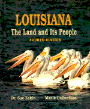
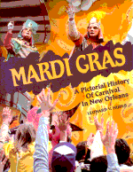
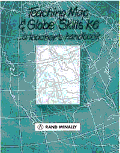
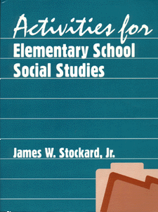
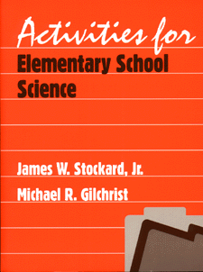
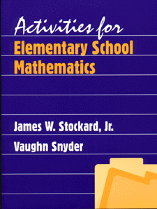
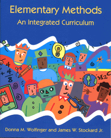

The book is nicely divided into the French period (1699-1769), the Spanish period (1766-1803), the Transfer period (1803), the Territorial period (1803-1812), and finally the State period (1812-present). The sketches capture the amazing careers of Huey Pierce Long who reorganized the governmental structure of Louisiana and was a national champion for the redistribution of wealth and perhaps on his way to national political fame before he was assassinated; of his brother, Earl Kemp Long, who was governor three times and certainly one of Louisiana's most colorful personalities; and of Jimmy Davis (James Houston Davis) composer of many songs, notably the well known, "You Are My Sunshine," among numerous others.
This easy-to-use reference, and its companion volumes in the series, belong in every school and public library, at the least, and in many classrooms where inquiry into the governorship is underway. 136 pp. 51Ž2 x 81Ž2; Illustrations-Bibliography-Index; SBN: 1-911116-471-0; Price: $18.95.
Louisiana
The Land and Its People
by Sue Eakin and Manie Culbertson
This Pelican textbook and its accompanying Teacher's Resource Book
are the basic ingredients for a comprehensive study of the great
state of Louisiana. The resource book is replete with lesson plans,
activities, duplicating masters (including outstanding sketches,
drawings, and graphics), and a set of superior color transparencies
for enhancing the lessons. Many of the transparencies are colorful
maps of Louisiana that will make understanding the State and the data
about the State much easier; even fun! The 560-page volume certainly
makes Louisiana culture come alive and provides a comprehensive
overview of Louisiana history, from the first Indian inhabitants
through the Civil War and Reconstruction to modern times. Some 200
photographs and illustrations, including 45 maps, complement the text
and encourage the reader to delve further into the background of
Louisiana and its people. Simply put, this text and its resource book
are necessities whenever a study of Louisiana is on the
agenda!
Mardi
Gras: A Pictorial History
of Carnival in New Orleans
by Leonard V. Huber
The carnival season in New Orleans starts just after Christmas and
continues until Lent. Some ninety large-scale tableau balls and more
than fifty street parades highlight the celebration which culminates
on Mardi Gras (Fat Tuesday) with the elaborate pageant of Rex, the
final parade in the plush series. In recent years, many of the
parades which precede Rex have, themselves, achieved great acclaim,
such as the Krewe of Bacchus, the Krewe of Endymion, and the Krewe of
Zulu. If you can't be there, then this book brings to life the
colorful pageantry and the pulse and excitement of this annual
extravaganza with more than 160 photographs and drawings. Included as
well are reproductions of the elaborate ball invitations, some dating
from the nineteenth century, and portraits of early carnival kings
and queens. This pictorial history of Mardi Gras in New Orleans is an
excellent supplementary resource for use in any study about Louisiana
and makes a coffee-table book of extraordinary interest!
Pelican
Publishing Company,
P.O. Box 3110, Gretna, Louisiana 70054.
1 (800) 843-1724
e-mail:
sales@pelicanpub.com;
fax number: (504) 368-1195.
Goode's has an excellent presentation of map projections, including clearly written explanations along with illustrations. The globe grid system is explained and there is an outstanding illustrated presentation of the Earth's movements about the sun, the Earth's 23 1/2 degree tilt, and the Earth's rotation, including time zones. Since 1922, Goode's has been recognized as the most comprehensive atlas available for advanced studies. Packed with regional, metro, and highly detailed thematic maps, this authoritative atlas also features new ocean floor maps, world comparison tables, a pronunciation guide to 35,000 places, and an exhaustive 117 page index. 8 13/16" x 11", 384 pages, available in paperback or clothbound.
This twentieth edition of the Rand McNally Goode's World Atlas, which was first published more than seventy years ago, is a state-of-the-art atlas which should be available to pupils in every school, both in classrooms where social studies is taught and in the school library/media center.
Teaching
Map & Globe Skills K-6:
A Teacher's Handbook
An outstanding resource for
the elementary school social studies teacher. Refreshes you and
brings you up-to-date on the intricacies of teaching about using
globes and maps; the Earth's positions and movements in space and how
they affect life on Earth, the grid system with solid explanations of
latitude and longitude, and great ideas for teaching globe and map
skills in the classroom. Designed to help teach the visual process of
using maps and globes. Contains 8 chapters covering topics such as
geographic literacy, map projections, and using maps and globes
across the curriculum.
Rand
McNally, Educational Publishing, 8255
North Central Park, Skokie, IL 60076-2970.
E-Mail: k12online@randmcnally.com
Phone:
1-800-678-7263
Fax: 1-800-934-3479
Published in May, 1999, by ABC-CLIO, 130 Cremona Drive, Santa Barbara, CA 93117-5505. Price: $375. for the set. http://www.abc-clio.com Telephone: 1-800-368-6868. E-Mail: market@abc-clio.com
Michael Behe is not a creationist. He believes in the scientific method, and he does not look to religious dogma for answers to these questions. But he argues persuasively that biochemical machines must have been designed, either by God, or by some other higher intelligence. For decades science has been frustrated, trying to reconcile the astonishing discoveries of modern biochemistry to a nineteenth-century theory that cannot accommodate them. With the publication of Darwin's Black Box, it is time for scientists to allow themselves to consider exciting new possibilities, and for the rest of us to watch closely.
The field of biochemistry, begun when Watson and Crick discovered the double-helical shape of DNA, has unlocked the secrets of the cell. There, biochemists have unexpectedly discovered a world of Lilliputian complexity. As Behe engagingly demonstrates, using the examples of vision, bloodclotting, cellular transport, and more, the biochemical world comprises an arsenal of chemical machines, made up of finely calibrated, interdependent parts. For Darwinian evolution to be true, there must have been a series of mutations, each of which produced its own working machine, that led to the complexity we can now see. The more complex and interdependent each machine's parts are shown to be, the harder it is to envision Darwin's gradualistic paths. Behe surveys the professional science literature and shows that it is completely silent on the subject, stymied by the elegance of the foundation of life. Could it be that there is some greater force at work?
Michael J. Behe is Professor of Biochemistry at Lehigh University. He lives in Bethlehem, Pennsylvania.
DARWINS BLACK BOX by
Michael J. Behe Free Press, 1998,Trade Paperback, $13.00, ISBN:
0-684-83493-6; Hardcover, $25.00, ISBN: 0-684-82754-9.
(800)
323-7445 order with your
Visa, MasterCard, American Express, or Discover card. If you wish to
order and pay by check, mail it to: The Free Press, attn: Dino
Battista, 1230 Avenue of the Americas, New York, NY 10020.
ACTIVITIES
FOR ELEMENTARY SCHOOL SOCIAL
STUDIES.
Children learn best through
experiences and activities. They learn by doing. Real, hands-on
materials, associated with a theme or topic of study, are the essence
of developing interest, motivation, meaning, and true understanding
in social studies classrooms. This important resource volume for
prospective social studies teachers thoroughly presents over one
hundred activities that are wide-ranging and can be adapted for
many grade levels by increasing or decreasing the complexity of the
activity. Each activity offers the same easy-to-follow format, making
the transition from one activity to another smooth and less
troublesome.
The key elements of each activity plan are:
By engaging pupils in meaningful, worthwhile social studies activities, teachers are emphasizing the processes of learning rather than the products. The experience should be enriching to pupils and teacher alike! Includes activity chapters on:
The appendix has such valuable resources as an Annotated Bibliography of Children's Books for Teaching Social Studies; Resources and Addresses for Social Studies Teachers; the Ten Thematic Strands of Social Studies developed by the National Council for the Social Studies; and Creating Lesson Plans and Unit Plans. 320 pages, $17.95
Phone: 847.634.0081 Fax: 847.634.9501
E-Mail: info@waveland.com
ACTIVITIES
FOR ELEMENTARY SCHOOL SCIENCE.
This volume for prospective
elementary school teachers is designed to encourage a sense of
exploration in students, prompting them to ask questions about
different aspects of their world. The science activities featured in
this large-format paperback motivate pupils to actively engage in
inquiries about the processes and concepts of life science, earth
science, physical science, and the environment; with a timely
emphasis on pertinent topics in ecology, ecosystems, and habitats.
Featured are:
Included in the generous resources section are the complete National Science Education Standards, an up-to-date presentation of Howard Gardner's Multiple Intelligences (including "naturalist"), science resources on the World Wide Web, sources for scientific equipment and supplies, and a lengthy annotated bibliography of children's books that encourage an interest in science. 262 pages, $16.95.
Phone: 847.634.0081 Fax: 847.634.9501
E-Mail: info@waveland.com
ACTIVITIES FOR ELEMENTARY SCHOOL MATHEMATICS. This resource volume for prospective elementary school teachers features over one hundred mathematics-related activities that can be adapted for many grade levels by increasing or decreasing the complexity of the activity. Using inexpensive materials that are readily available to the instructor, these exercises provide creative, hands-on learning experiences developed to enrich pupils' mathematical knowledge and understanding.
Includes activities on
Also included is a hefty annotated bibliography of children's books helpful in teaching mathematics, as well as internet resources for teaching mathematics, and The National Council of Teachers of Mathematics National Standards for Teaching Mathematics. 300+ pages, $18.95.
Phone: 847.634.0081 Fax: 847.634.9501
E-Mail: info@waveland.com
ELEMENTARY
METHODS:
AN
INTEGRATED CURRICULUM
helps teachers understand,
plan, and implement the research-based principles of integrated
instruction in the elementary classroom. Grounded in the
developmental theory of Piaget and Vygotsky, it connects learning
theory and age-appropriate instruction to curriculum development. An
effective balance of state-of-the-art theory and practice, the text
offers clear explanations and numerous examples of important concepts
and integrated teaching strategies.
Topics include:
The authors' realistic approach acknowledges the controversies surrounding integrated instruction and recognizes the difficulties of implementing it. Features:
Integrating activities help students synthesize various concepts. Study questions and bibliographies end every chapter. Chapters:
Longman Publishing Company, 1997, paperback, 368 pages, ISBN: 0-8013-1609-X. To purchase a single copy, call 1.800.322.1377; to order a desk copy, call 1.800.552.2499. Click Here to request an examination copy.


Click
Here to Go to Southeast Regional Social Studies
Conference
|

Click
Here to Go to the Alabama Council for the Social
Studies
|

Inquiries and/or comments about this site should be sent to jstockard@edla.aum.edu